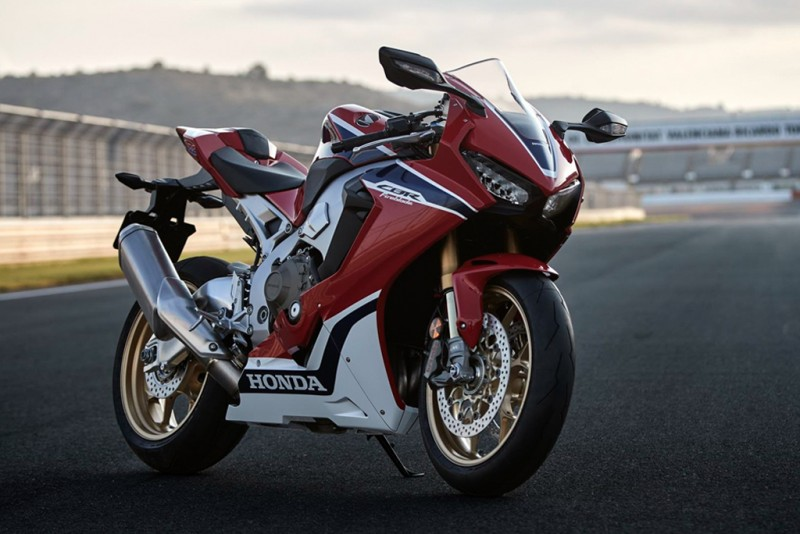
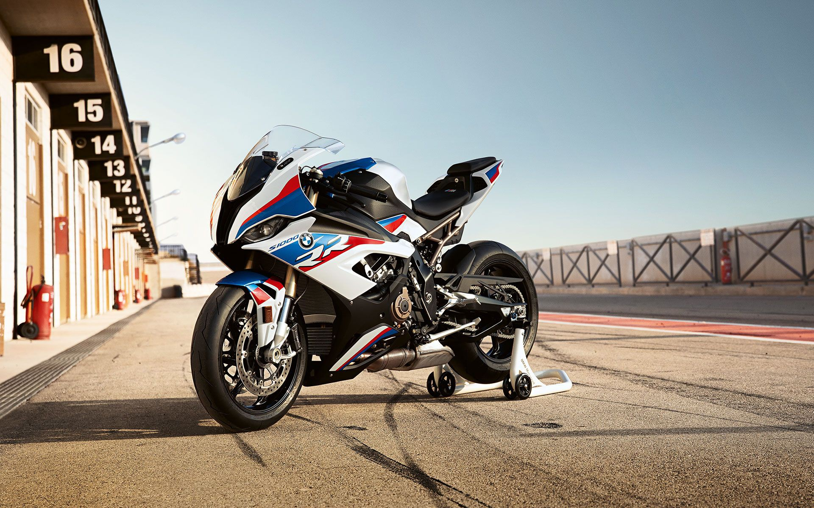
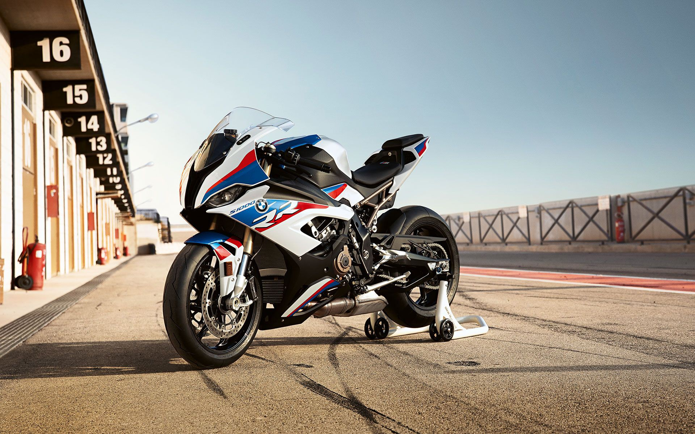

เรื่องน่ารู้ภายในเว็บไซต์




Honda
Honda CBR1000RR เป็นรถ Bigbike แนว Super Sport จากค่าย Honda ที่ให้ความโดดเด่นด้วยรูปลักษณ์และสมรรถนะเครื่องยนต์ ชุดสีออกแบบใหม่มีสองสีให้เลือกด้วยกัน ได้แก่ สีแดง (Victory Red) และ สีดำ (Mat Ballistic Black Metallic) มีคันเร่งไฟฟ้า (Throttle by Wire) ที่ทำงานพร้อมกันกับเซ็นเซอร์ APS ที่อยู่ใน Handlebar grip ช่วยในการควบคุมได้เป็นอย่างดี จอแสดงผมเป็นแบบ TFT (Thin-Film Transistor) LCD เป็นตัวเดียวกันกับที่ใช้ในตัว RC213V-S ให้รถดูสปอร์ตมากยิ่งขึ้น เครื่องยนต์ 4 สูบเรียง 4 จังหวะ DOHC 16 วาล์ว ขนาด 998 ซีซี. อัตราส่วนกำลังอัดอยู่ที่ 13.0 สามารถทำกำลังสูงสุดได้ 192 แรงม้า ที่ 13,000 รอบ/นาที ฮอนด้า ซีบีอาร์ 1000 อาร์อาร์ มาพร้อมเครื่องยนต์ 4 สูบเรียง 4 จังหวะ
Kawasaki
Kawasaki Ninja ZX-10R จักรยานยนต์สไตล์สปอร์ตที่มีสมรรถณะที่ยอดเยี่ยมที่เป็นผลงานการออกแบบมาจากการแข่งขัน Superbike World Championship (WSB) โดยรั้งอันดับ 2 ในปี 2012, คว้าแชมป์ในปี 2013 และอันดับ 2 ในปี 2014 กับจักรยานยนต์ซุปเปอร์ตสปอร์ตที่มีการออกแบบโดดเด่น คาวาซากิ นอนจา แซตเอ็กซ์-10อาร์ มาพร้อมคุณสมบัติที่โดดเด่นไม่ว่าจะเป็นรูปลักษณ์ที่โฉบเฉี่ยว ระบบกันสะเทือนซูเปอร์ไบค์ระดับโลกคาวาซากิพัฒนาร่วมกับ Showa ระบบเบรก BREMBO สมรรถภาพเยี่ยม คล้ายกับระบบที่ใช้ในรุ่น Ninja H2R
Yamaha
2021 Yamaha YZF-R1M โฉมใหม่มาพร้อมการออกแบบที่เป็นเอกลักษณ์สไตล์ M1 การอัพเดทเทคโนโลยีที่ทันสมัย สไตล์ตัวถังและโครงสร้างเฟรมที่เพรียวบางคล่องตัวยิ่งขึ้น ทั้งการผสมผสานคาร์บอนไฟเบอร์ใหม่ช่วงท้ายได้อย่างลงตัว ยามาฮ่า วายแซดเอฟ-อาร์1เอ็ม มากับระบบ ระบบอิเล็กทรอนิกส์ใหม่ช่วยเพิ่มความมั่นใจและการควบคุมของผู้ขับขี่ในขณะที่เครื่องยนต์ที่ได้รับการปรับปรุงการปรับปรุงระบบกันสะเทือนและเบรก การปรับปรุงคงามคล่องตัวของมอเตอร์ไซค์สไตล์สปอร์ตคันนี้ให้สมบูรณ์แบบยิ่งขึ้น เรียกได้ว่าเป็นอีกหนึ่งมอเตอร์ไซค์ที่สามารถควบคุมระดับเดียวกับรถในสนาม MotoGP เลยทีเดียว YZF-R1M การออกแบบตัวถังรถช่วยเพิ่มประสิทธิภาพการทำงานให้มีคุณภาพสูงขึ้น ที่มีการออกแบบใหม่สร้างประสิทธิภาพการขับขี่ที่เพิ่มขึ้น 5.3%